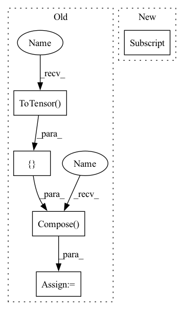

Pattern ID :25164
Before Change
])),
batch_size=batch_size, shuffle=True, **kwargs)
val_loader = torch.utils.data.DataLoader(
my_dataloader(input_data[1],transforms.Compose([
TestDataAug(img_size, img_size),
transforms.ToTensor() ,
my_normalize) ),
batch_size=batch_size, shuffle=False, num_workers=0, pin_memory=False)
return train_loader, val_loader
After Change
// from libs.FastAutoAugment.archive import fa_resnet50_rimagenet
label_path = cfg["label_path"]
if cfg["label_type"] == "DIR":
label_path = cfg["train_path"]
train_loader = torch.utils.data.DataLoader(
my_dataloader(input_data[0],
cfg["label_type"],In pattern: SUPERPATTERN
Frequency: 3
Non-data size: 5
Instances Fragment ID: 76965047
Project Name: fire717/fireclassification
Commit Name: 4628b872d596723f152ee50023b336a44d59c320
Time: 2020-11-26
Author: yi.wei@imprexion.com.cn
File Name: fire/datatools.py
M Class Name: AnonimousClass
N Class Name: AnonimousClass
M Method Name: getDataLoader(3)
N Method Name: getDataLoader(6)
M Parent Class:
N Parent Class:
M File Name: fire/datatools.py
N File Name: fire/datatools.py
M Start Line: 167
M End Line: 277
N Start Line: 209
N End Line: 286
Before Change
// from libs.FastAutoAugment.data import Augmentation
// from libs.FastAutoAugment.archive import fa_resnet50_rimagenet
train_loader = torch.utils.data.DataLoader(
my_dataloader(input_data[0],transforms.Compose([
TrainDataAug(img_size, img_size),
//ImageNetPolicy(), //autoaug
//Augmentation(fa_resnet50_rimagenet()), //fastaa
transforms.ToTensor() ,
my_normalize) ),
batch_size=batch_size, shuffle=True, **kwargs)
val_loader = torch.utils.data.DataLoader(After Change
cfg["label_type"],
label_path,
transforms.Compose([
TestDataAug(cfg["img_size"] ),
transforms.ToTensor(),
my_normalize
])), Fragment ID: 76965044
Project Name: fire717/fireclassification
Commit Name: 4628b872d596723f152ee50023b336a44d59c320
Time: 2020-11-26
Author: yi.wei@imprexion.com.cn
File Name: fire/datatools.py
M Class Name: AnonimousClass
N Class Name: AnonimousClass
M Method Name: getDataLoader(3)
N Method Name: getDataLoader(6)
M Parent Class:
N Parent Class:
M File Name: fire/datatools.py
N File Name: fire/datatools.py
M Start Line: 167
M End Line: 277
N Start Line: 209
N End Line: 286
Before Change
if data_transforms:
image = data_transforms(image)
else:
data_transforms = transforms.Compose([ transforms.ToTensor() ,])
image = data_transforms(image)
// convert to batch of size 1
inputs = image.unsqueeze(0).to(self.device)
outputs = self(inputs)After Change
y_pred = list(predicted.cpu().detach().numpy())
y_true = None
return y_true, y_pred[0], y_pred_probs[0]
def predict_output_per_batch(self, dataloader, description):
Run predictions on a dataloader and return inputs, outputs, labels per batch
Fragment ID: 76965043
Project Name: biasvariancelabs/aitlas
Commit Name: 2680a6b954c3611a4c196fc6f12f35427f6423ec
Time: 2021-09-09
Author: ivica.dimitrovski@yahoo.com
File Name: aitlas/base/models.py
M Class Name: BaseModel
N Class Name: BaseModel
M Method Name: predict_image(4)
N Method Name: predict_image(4)
M Parent Class: nn.Module,Configurable
N Parent Class: nn.Module,Configurable
M File Name: aitlas/base/models.py
N File Name: aitlas/base/models.py
M Start Line: 301
M End Line: 315
N Start Line: 299
N End Line: 315
Before Change
def show_misclassified(misclassified_dictionary, is_dicom = True, num_of_images = 16, figure_size = (5,5)):
row = int(math.sqrt(num_of_images))
sample = random.sample(list(misclassified_dictionary), num_of_images)
transform= transforms.Compose([ transforms.Resize((244, 244)),transforms.ToTensor() ])
if is_dicom:
imgs = [torch.from_numpy(dicom_to_narray(i)) for i in sample]
else:
imgs = [transform(Image.open(i).convert("RGB")) for i in sample]After Change
imgs = [torch.from_numpy(dicom_to_narray(i)) for i in sample]
else:
imgs = [transforms(Image.open(i).convert("RGB")) for i in sample]
titles = [(str(i["true_label"] ),",", str(i["predicted_label"]),",", str(i["accuarcy"])+"%") for i in sample]
// grid = torchvision.utils.make_grid(imgs, nrow=row)
// plt.figure(figsize=(figure_size))
// plt.imshow(np.transpose(grid, (1,2,0))) Fragment ID: 76965054
Project Name: radtorch/radtorch
Commit Name: 3834eba24d28be2da3399132117d6be36eb143d7
Time: 2020-03-27
Author: elbanan@users.noreply.github.com
File Name: radtorch/visutils.py
M Class Name: AnonimousClass
N Class Name: AnonimousClass
M Method Name: show_misclassified(5)
N Method Name: show_misclassified(4)
M Parent Class:
N Parent Class:
M File Name: radtorch/visutils.py
N File Name: radtorch/visutils.py
M Start Line: 44
M End Line: 51
N Start Line: 78
N End Line: 90